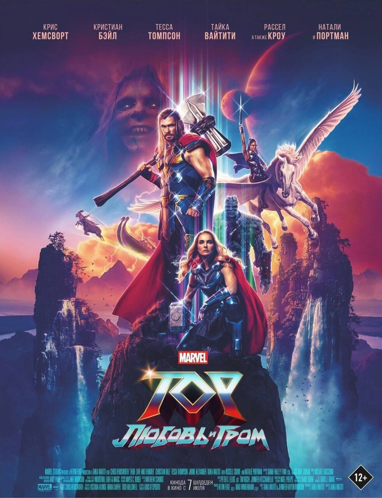
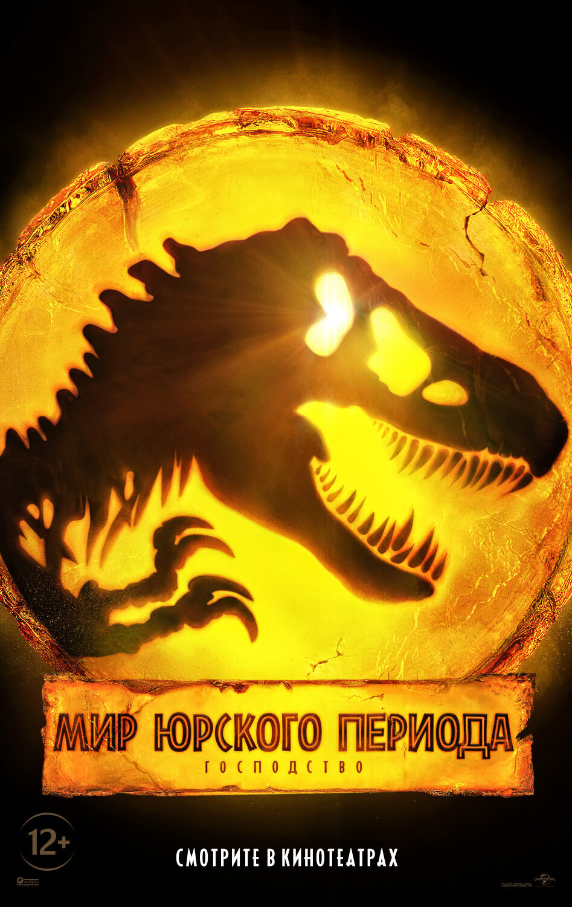
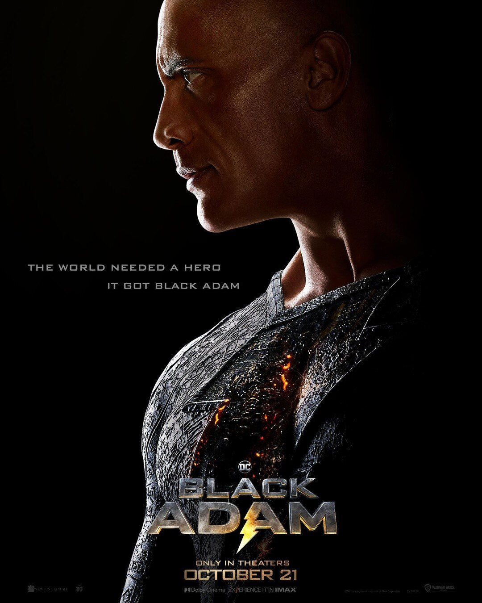
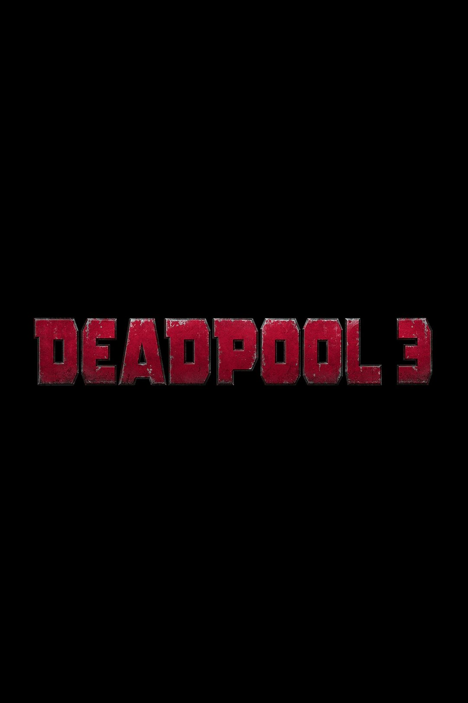

Крис Хемсворт собирает «величайшую команду» в новом тизере «Тора: Любовь и гром»
Студия Marvel продолжает активно продвигать свой очередной полнометражный фильм «Тор: Любовь и гром», представив новый полуминутный тизер. Подробности сюжета по-прежнему не раскрываются, но известно, что Тору в исполнении Криса Хемсворта придется столкнуться со злодеем Горром, который неспроста получил прозвище Убийца богов. Антагониста в предстоящем блокбастере сыграет Кристиан Бэйл.

«Мир Юрского периода: Господство» стартовал в прокате
Франшиза студии Universal о динозаврах «Мир Юрского периода» не подает признаков вымирания в мировом прокате. За две недели на большом экране блокбастер «Мир Юрского периода: Господство» собрал по всему миру $398 млн (143,3$ млн на североамериканском рынке и $245,7 млн за рубежом), что примерно соответствует аналогичным показателям предыдущей части, вышедшей в 2018 году.

Дуэйн Джонсон в трейлере супергеройского фильма «Черный Адам»
Warner Bros. и DC Films наконец представили первый полноценный трейлер супергеройского блокбастера «Черный Адам» во главе с Дуэйном «Скалой» Джонсоном.

Вышел новый трейлер мультфильма «Миньоны: Грювитация»
Киностудия Illumination представила очередной трейлер анимационного фильма «Миньоны: Грювитация», который станет пятой частью франшизы «Гадкий я». Судя по новому проморолику, мультфильм будет полон шуток и невероятных приключений при участии милых желтых созданий, которые стремятся спасти своего «мини-босса» Грю.

Сценаристы «Дэдпула 3» уверяют, что герой останется верен себе
С тех пор, как корпорация Disney приобрела студия 20th Century Fox, у Marvel Studios появилась возможность интегрировать в свою киновселенную массу новых персонажей, включая Фантастическую четверку и Людей-Икс. Это открывает большие перспективы, но есть один супергерой, который не вписывается в текущую «семейную» стратегию Disney. Первые два фильма о Дэдпуле имеют возрастной рейтинг 18+. Комментируя опасения, что под крылом Disney Дэдпул может утратить свою харизму, сценаристы третьей части Ретт Риз и Пол Верник заверили, что ничего подобного не случится.